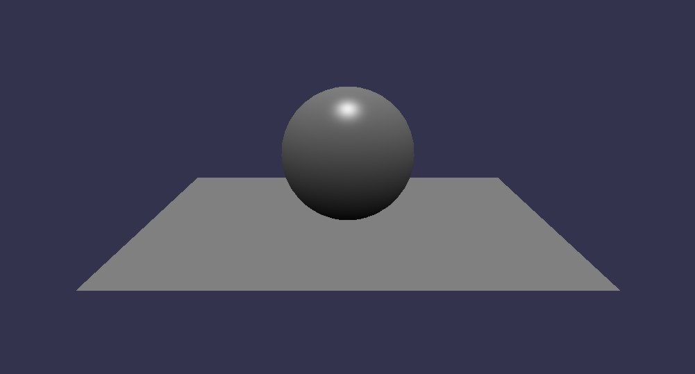

在这个基本场景中有两个基本形状
在你开始之前，请确定你有一个支持WebGL的浏览器(比如Internet Explorer 11+, Firefox 4+, Google Chrome 9+, Opera 15+, 等等.).
第一步，建立一个基本的HTML5网页
<!DOCTYPE html>
<html xmlns="http://www.w3.org/1999/xhtml">
<head>
<meta http-equiv="Content-Type" content="text/html; charset=utf-8"/>
<title>Babylon - Basic scene</title>
</head>
<body>
</body>
</html>
在<head>标签中, 请加入这一段CSS以保证canvas标签保持最大化
<style>
html, body {
overflow: hidden;
width: 100%;
height: 100%;
margin: 0;
padding: 0;
}
#renderCanvas {
width: 100%;
height: 100%;
touch-action: none;
}
</style>
现在我们加载框架文件。在CSS的后面，（但是仍然在<head>标签里），请加入以下内容：
<script src="babylon.js"></script>
<script src="hand.js"></script>
<script src="cannon.js"></script> <!-- optional physics engine -->
<!-- <script src="Oimo.js"></script> New physics engine -->
（如果你现在没有这些文件，你可以在这里找到它们：https://github.com/BabylonJS/Babylon.js，还有这里：http://handjs.codeplex.com/)
接下来，我们进入网页的<body>部分。我们加入了一个HTML5 canvas标签，后面我们将在这个标签内绘制3D场景。
<canvas id="renderCanvas"></canvas>
现在，我们从HTML5标签的书写跳转到JavaScript脚本书写。请在<body> 部分中加入：
<script>
// 从上面的HTML中取得canvas元素
var canvas = document.getElementById("renderCanvas");
//加载BABYLON 3D 引擎
var engine = new BABYLON.Engine(canvas, true);
现在，你将开始添加场景创建代码。为了保证你的代码可以适应Babylon.js Playground，我们建议你在这里插入一个‘createScene’方法，除了生成一个Babylon场景对象之外，createScene()也是你添加你的基本场景设定的地方，包括：一个相机，一个光源，还有一个或多个形状/网格。
所以现在请将整个 createScene 方法加入到你的网页中:
// 这相当于一个构造函数，在场景对象建立时将会执行。
var createScene = function () {
// 建立基本场景
var scene = new BABYLON.Scene(engine);
// 将场景的背景色改为绿色
scene.clearColor = new BABYLON.Color3(0, 1, 0);
// 创建并放置一个自由相机
var camera = new BABYLON.FreeCamera("camera1", new BABYLON.Vector3(0, 5, -10), scene);
// 将相机的目标指向场景的原点
camera.setTarget(BABYLON.Vector3.Zero());
// 为相机添加一个基于canvas的控制器
camera.attachControl(canvas, false);
// 建立一个光源，指向0,1,0方向——竖直朝上。
var light = new BABYLON.HemisphericLight("light1", new BABYLON.Vector3(0, 1, 0), scene);
// 令光源变得稍微昏暗
light.intensity = .5;
// 让我们尝试Babylon.js内建的‘球’形状。参数：名字，弧面细分度，直径，所属场景
var sphere = BABYLON.Mesh.CreateSphere("sphere1", 16, 2, scene);
//将球体上移它直径的一半（球体默认绘制在原点，上移后原点在球体的正下表面处）
sphere.position.y = 1;
// 尝试Babylon.js内建的‘地面’形状。参数：名字，宽度，深度，细分度，所属场景。
var ground = BABYLON.Mesh.CreateGround("ground1", 6, 6, 2, scene);
// 将生成的场景对象返回
return scene;
}; // 结束createScene方法
好的，这将是一个很复杂的函数，但是不要让它吓退你。你将在未来的教程中学到更多关于光照、相机、内建图形等对象的参数和属性的知识。你要记住的重点是这个createScene方法包含了所有的全局设定。它包括：
还有三块额外的代码要加入到你的网页中。首先是对我们刚刚完成的createScene方法的调用。添加如下内容：
// 现在，调用你刚刚编写完成的createScene函数
var scene = createScene();
第二步，建立核心渲染循环，来重复的刷新场景（在C++时代这里是自己写的for语句，在原生WebGl中是requestAnimFrame，在Babylon中作者进行了进一步封装）
// 注册一个渲染循环来重复渲染场景
engine.runRenderLoop(function () {
scene.render();
});
最后，一个可选但好用的窗口大小变化处理方法。
// 监听浏览器或canvas标签的尺寸改变事件
window.addEventListener("resize", function () {
engine.resize();
});
现在，所有的JavaScript脚本编写已经完成，确保你关闭了script、body、html标签。
</script>
</body>
</html>
你成功了！将这个html文件和babylon.js、hand.js、cannon. js 保存在同一个文件夹中，然后用你支持WebGL的浏览器来访问。你将看到canvas中显示的3D场景
一个使用Babylon.js Playground展示的类似场景可以在这里看到。你将可以在线的查看整个场景，如果感兴趣的话可以使用'Get .zip' 功能来下载整个index.html文件
这里是整个网页:
<!doctype html>
<html>
<head>
<meta charset="utf-8">
<title>Babylon - Basic scene</title>
<style>
html, body {
overflow: hidden;
width: 100%;
height: 100%;
margin: 0;
padding: 0;
}
#renderCanvas {
width: 100%;
height: 100%;
touch-action: none;
}
</style>
<script src="babylon.js"></script>
<script src="hand.js"></script>
<script src="cannon.js"></script> <!-- optional physics engine -->
</head>
<body>
<canvas id="renderCanvas"></canvas>
<script type="text/javascript">
// Get the canvas element from our HTML below
var canvas = document.querySelector("#renderCanvas");
// Load the BABYLON 3D engine
var engine = new BABYLON.Engine(canvas, true);
// -------------------------------------------------------------
// Here begins a function that we will 'call' just after it's built
var createScene = function () {
// Now create a basic Babylon Scene object
var scene = new BABYLON.Scene(engine);
// Change the scene background color to green.
scene.clearColor = new BABYLON.Color3(0, 1, 0);
// This creates and positions a free camera
var camera = new BABYLON.FreeCamera("camera1", new BABYLON.Vector3(0, 5, -10), scene);
// This targets the camera to scene origin
camera.setTarget(BABYLON.Vector3.Zero());
// This attaches the camera to the canvas
camera.attachControl(canvas, false);
// This creates a light, aiming 0,1,0 - to the sky.
var light = new BABYLON.HemisphericLight("light1", new BABYLON.Vector3(0, 1, 0), scene);
// Dim the light a small amount
light.intensity = .5;
// Let's try our built-in 'sphere' shape. Params: name, subdivisions, size, scene
var sphere = BABYLON.Mesh.CreateSphere("sphere1", 16, 2, scene);
// Move the sphere upward 1/2 its height
sphere.position.y = 1;
// Let's try our built-in 'ground' shape. Params: name, width, depth, subdivisions, scene
var ground = BABYLON.Mesh.CreateGround("ground1", 6, 6, 2, scene);
// Leave this function
return scene;
}; // End of createScene function
// -------------------------------------------------------------
// Now, call the createScene function that you just finished creating
var scene = createScene();
// Register a render loop to repeatedly render the scene
engine.runRenderLoop(function () {
scene.render();
});
// Watch for browser/canvas resize events
window.addEventListener("resize", function () {
engine.resize();
});
</script>
</body>
</html>
在前面的基础教程中，我主要在向你讲述如何将createScene方法插入一个Babylon.js项目中（虚线之间的部分）。在下面的教程中我将假定你已经掌握了这一知识。
请试着记住这个网页布局，并且理解createScene方法的重要意义。在你使用Babylon.js Playground一段时间后，你将发现createScene()是很灵活的，它可以被方便的在编辑器里复制粘贴。这将方便其他人帮助你解决问题，也将方便你帮助他人。
现在你已经准备好继续前进并学习如何建立更多的图形元素，比如球体、圆柱体、立方体等等。
下一个教程Basic elements